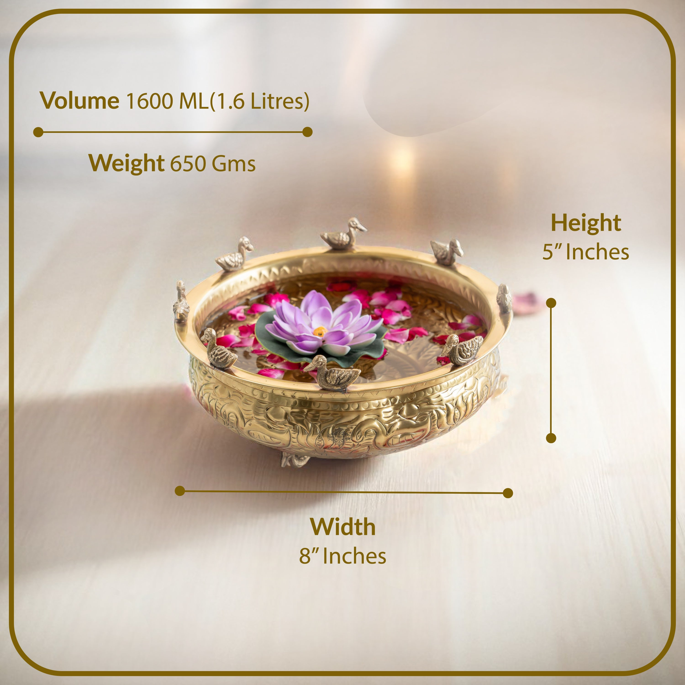
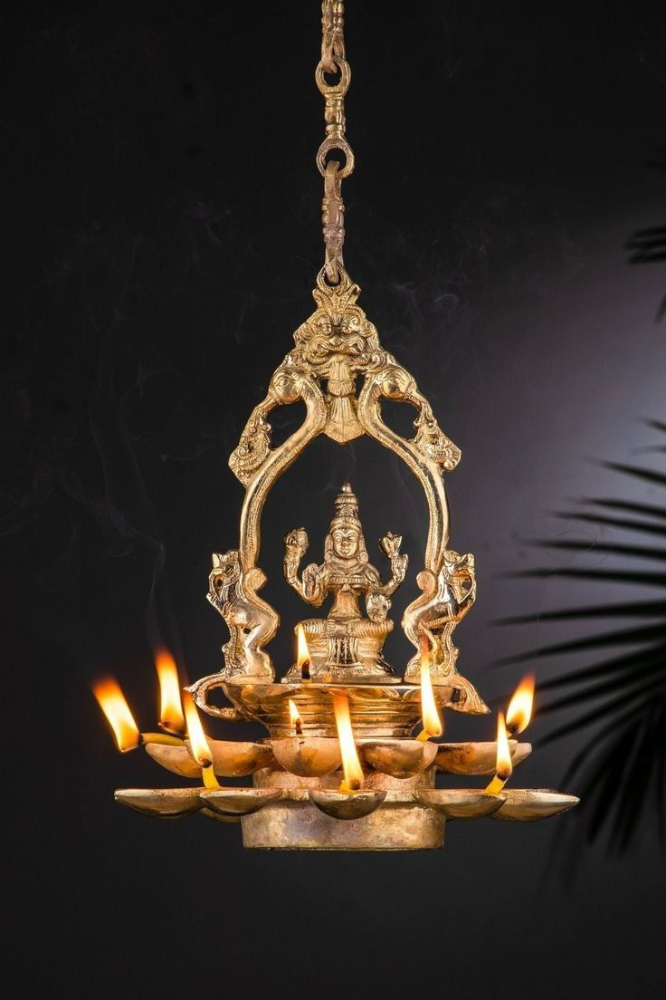
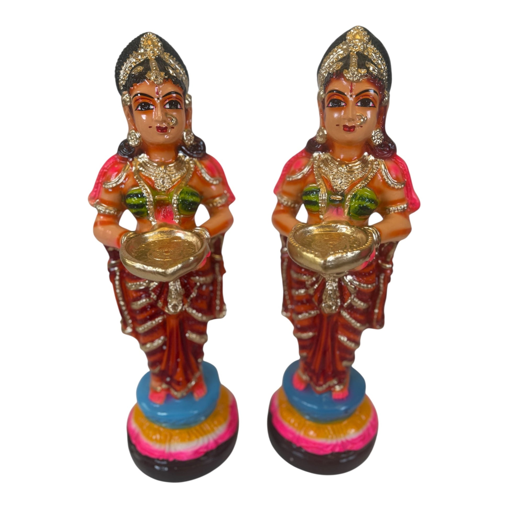
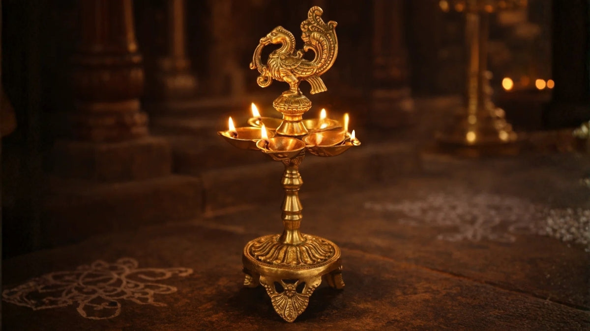

Nachiarkoil Brass LampsTN ARTISAN · Independent Tamil Nadu marketplace
Handmade, with a story in every detail.
Browse pottery, painting, metalwork, carving and woven goods from across the state.
All productsThanjavur PaintingsThanjavur Art PlatesSwamimalai BronzeNachiarkoil Brass LampsKalamkari & TextilesMamallapuram Stone CarvingTamil Nadu Wood CarvingClay & PotteryPalm Leaf & Jute

Nachiarkoil Brass Lamps
Nachiarkoil Brass Lamps Nachiarkoil Brass Lamps
Nachiarkoil Brass Lamps Nachiarkoil Brass Lamps
Nachiarkoil Brass Lamps
Nachiarkoil Brass LampsMade with care · built for makers
Make room for handmade.
Tell the story behind your craft and bring your work to people who value it.
கைவினைTHE HANDS BEHIND THE OBJECT